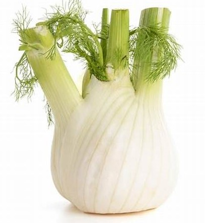

1. Seasons for Growing Fennel Bulbs

Fennel bulbs thrive in cooler weather. The ideal growing seasons are:
- Spring: Sow seeds directly outdoors in early spring after the last frost. Fennel grows best when temperatures are between 60-70°F (15-21°C).
- Fall: In mild climates, fennel can also be planted in late summer for a fall harvest. Ensure plants have enough time to mature before the first frost.